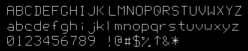

| vfr - Volflex rendering API - |
class vfrLineText
Class Hierarchy
Header files
- #include "vfrLineText.h"
- vfrLineText(const std::string& name VFR_NONAME, const Bool mode = FALSE)
- vfrLineTextオブジェクトをインスタンスする。
- name オブジェクト名
- mode 自己破壊モード
- virtual ~vfrLineText()
- vfrLineTextオブジェクトを破壊する。
public methods / variables
- なし(vfrLettersクラスのメソッドを参照)
Description
vfrLineTextクラスは、線で表現された英数字のストロークフォントを表現する
オブジェクトクラスである。

vfrLineTextオブジェクトは、レンダリングモードが
RT_POINTの場合、ローカル座標系の原点位置に一点のみ
ポイントレンダリングを行う。
Feedback
vfrLineTextオブジェクトはフィードバックテストにおいて、常に不合格となる。